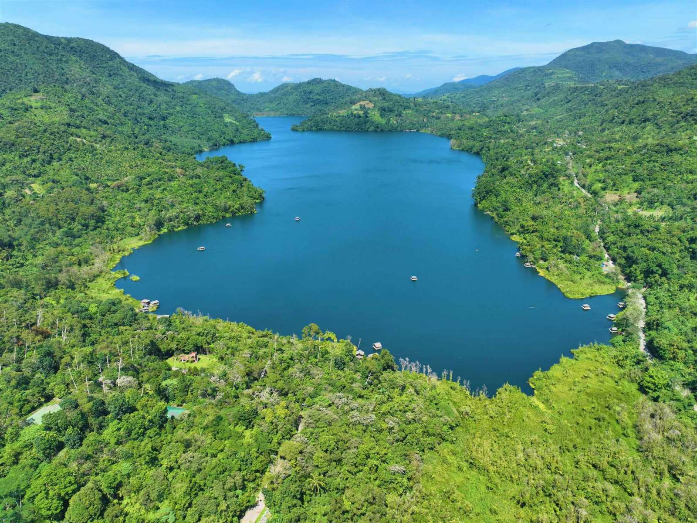

Nestled in the highlands of Ormoc, Lake Danao National Park is a serene natural escape known for its guitar-shaped lake and cool mountain atmosphere. Surrounded by lush forests and rolling hills, the park offers a refreshing retreat for travelers seeking relaxation, outdoor adventure, and a peaceful connection with nature.

Lake Danao National Park is one of the largest natural lakes in the Eastern Visayas, covering more than 140 hectares. Its unique guitar-like shape makes it instantly recognizable and adds to its charm. Located about 18 kilometers from Ormoc City, the park is a popular destination for both locals and tourists looking to enjoy activities such as kayaking, boating, and picnicking in a cool and scenic environment.
Beyond recreation, the park is also an important ecological site. It is home to diverse plant and animal species, making it a great spot for nature lovers and birdwatchers. The surrounding forests and fresh mountain air create a calm and refreshing atmosphere, offering a perfect break from the heat and busy pace of city life. Whether you’re exploring the lake or simply enjoying the view, the park provides a relaxing and memorable outdoor experience.

The park is located in the mountains near Ormoc City, offering a cooler climate than lowland areas.
It is one of the largest natural lakes in Eastern Visayas, covering over 140 hectares.
Lake Danao is famous for its guitar-shaped lake, a rare natural formation